Ainan, Ehime: things to do, food and stays
Ainan · Ehime
Ainan
Highlighted on the Ehime map.

Stay
宇和海国立公園 青い国ホテル
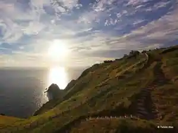
Uwami Kokuritsukoen Aoi Kuni Hotel
HOTEL AZ 愛媛愛南店
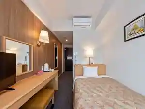
HOTEL AZ Ehime Ainan
Inn in Mishonara, Ainan; 30-minute drive from Sukumowada IC.
ホテルセレクト愛媛愛南町
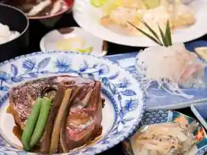
Hotel Serekuto Ehime Ainan Machi
Hotel in Hiromi, Ainan with Wi-Fi and a sauna.
一本松温泉 あけぼの荘
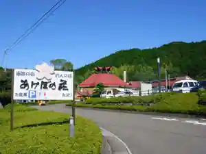
Ipponmatsu Onsen Akebono So
Inn at Ipponmatsu Onsen in Masuda, Ainan with business travelers.
大下民宿
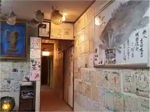
Oshita Minshuku
Family-run minshuku in Nakadomari, Ainan with local seafood dinners.
マリンランドひらばえ
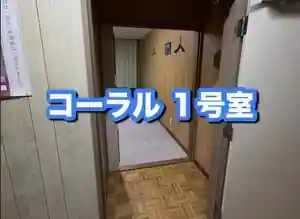
Marinrando Hirabae
Inn in Tairaha, Ainan with family-friendly stays.
Dining
愛南 市場食堂
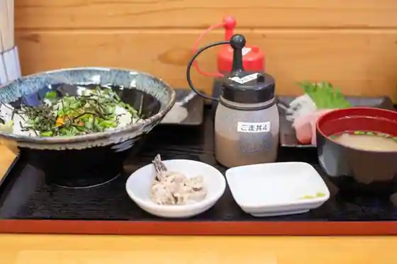
Ainan Shijo Shokudo
なにわ
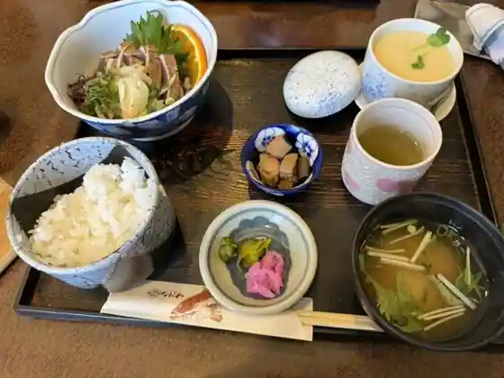
Naniwa
ゆらり内海
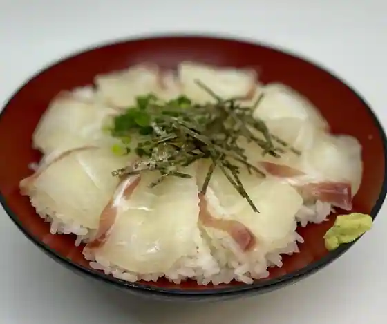
Yurari Utsumi
白椿
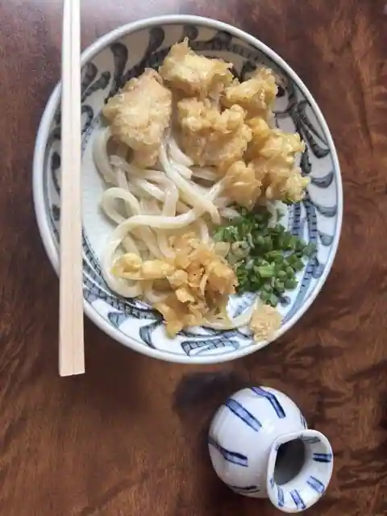
Shirotsubaki
道の駅 みしょうMIC
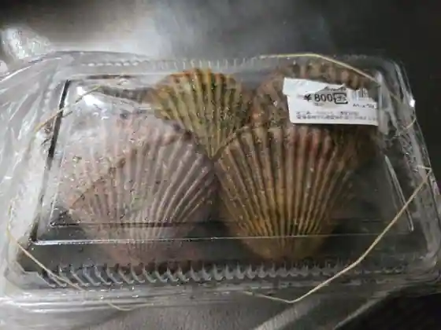
Michi No Eki Misho MIC
山出憩いの里温泉
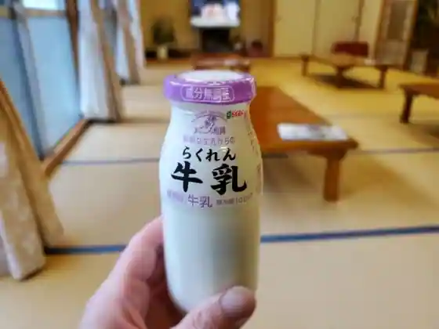
Yamade Ikoi No Sato Onsen
あけぼの荘
Akebono So
シェフミー
Shiefumi
青い国ホテル
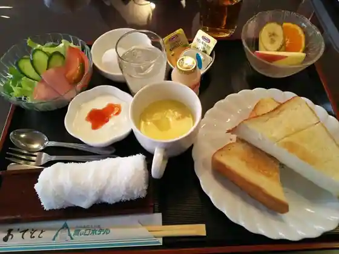
Aoi Kuni Hotel
アルファ
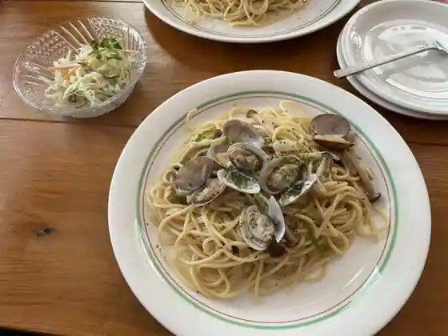
Arufa
アンベール
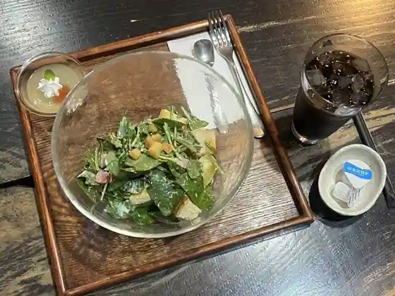
Anberu
お好み焼き ひらの
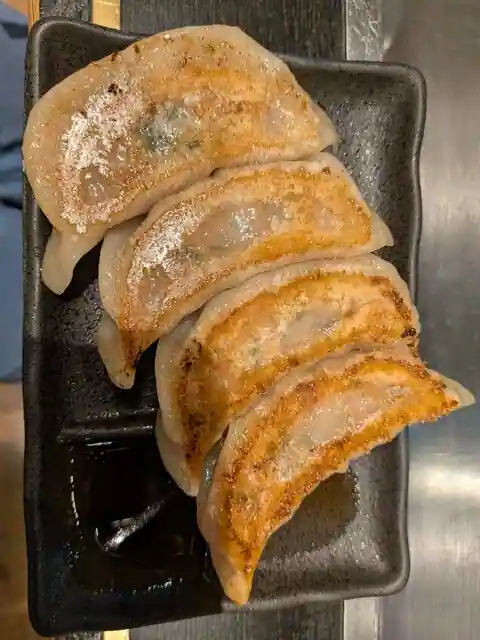
O Konomi Yaki Hirano
ほっとバター
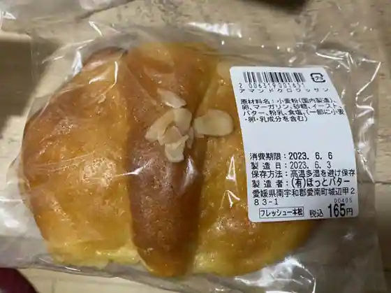
Hotto Bata
華山
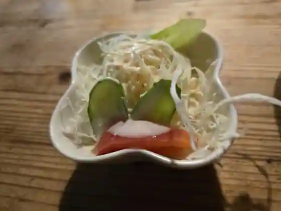
Kazan
ラヴィータ
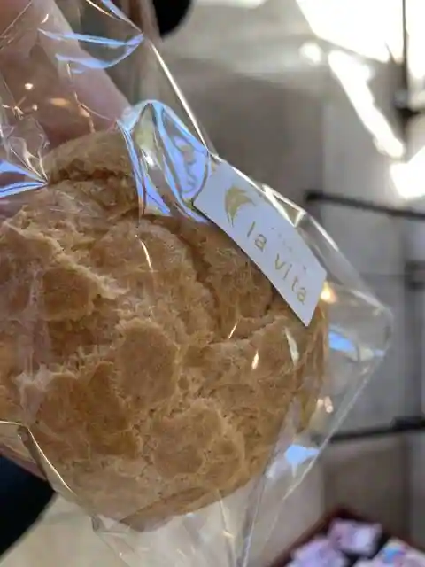
Ravita
フレッシュ一本松
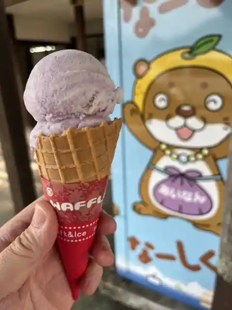
Furesshu Ipponmatsu
Mimosa Cafe
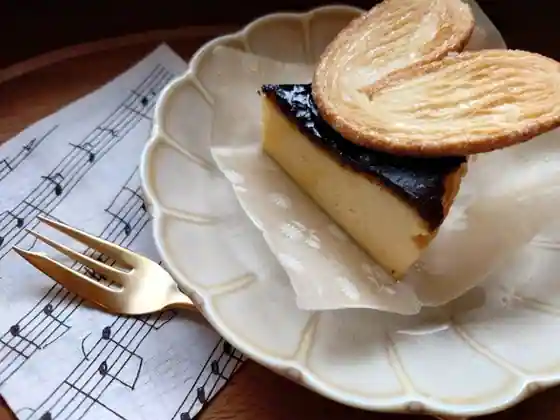
Mimosa Cafe
豊源
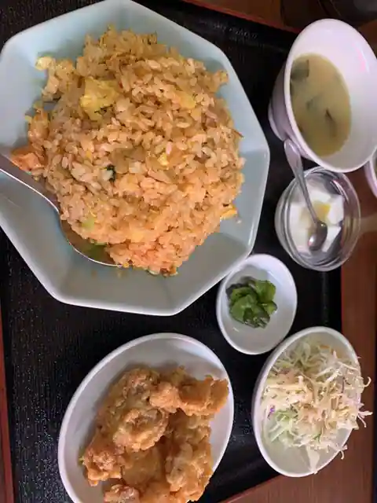
Yutaka Gen
みかど食堂
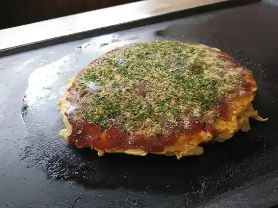
Mikado Shokudo
民宿ビーチ
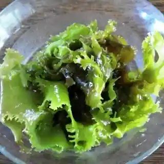
Minshuku Bichi
大樹
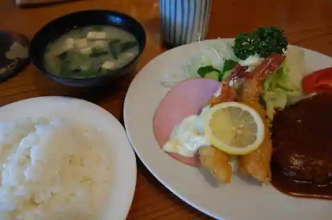
Taiju
Sights
Ainan Town Hall
Gaihaku Ishigaki Village

Sozu Kawa

Funakoshi (Saikai)

Hikari Zendera Hondo

Shidenkai Tenjikan